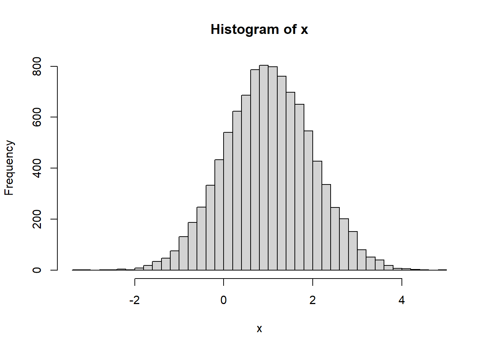
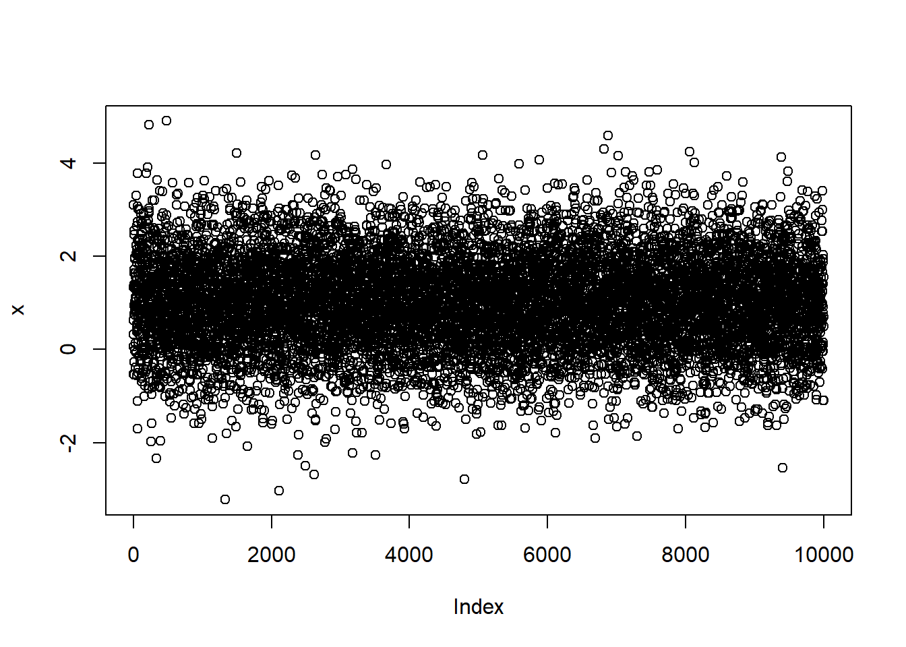
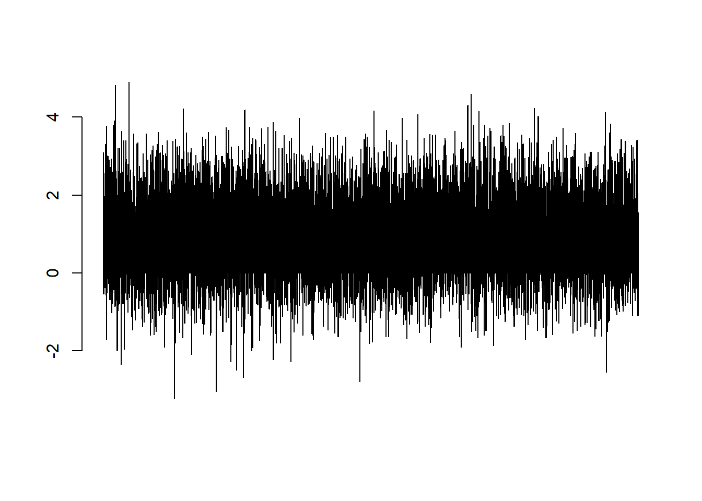
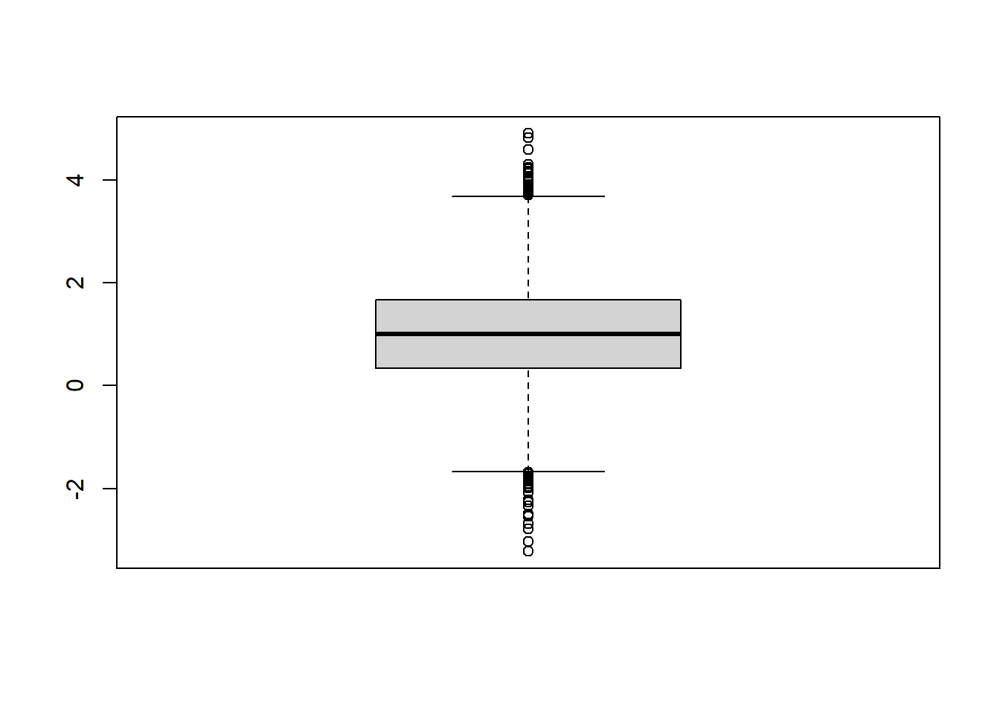

O é um projeto colaborativo com contribuições de pessoas do mundo todo cujo objetivo é oferecer uma ferramenta estatística moderna para sistema GNU de software livre.
O foi idealizado e escrito por Robert Gentleman e Ross Ihaka — conhecidos como “R & R” do Departamento de Estatística da Universidade de Auckland.
O foi inspirado no ambiente S, que tem sido principalmente desenvolvido por John Chambers, com contribuições substanciais de Douglas Bates, Rick Becker, Bill Cleveland, Trevor Hastie, Daryl Pregibon e Allan Wilks.
Uma alusão especial é devida a John Chambers, que gentilmente contribuiu com conselhos e encorajamento nos primeiros dias de e, mais tarde, tornou-se membro da equipe principal.
A partir de meados de 1997, um grupo central de desenvolvedores com acesso à escrita fonte do passou a trabalhar nesse projeto desde então:
Adicionalmente…
O não seria o que é hoje sem a ajuda inestimável de pessoas fora da equipe principal do R, que contribuíram doando código, correções de bugs e documentação:
Valerio Aimale, Suharto Anggono, Thomas Baier, Henrik Bengtsson, Roger Bivand, Ben Bolker, David Brahm, G“oran Brostr”om, Patrick Burns, Vince Carey, Saikat DebRoy, Matt Dowle, Brian D’Urso, Lyndon Drake, Dirk Eddelbuettel, Claus Ekstrom, Sebastian Fischmeister, John Fox, Paul Gilbert, Yu Gong, Gabor Grothendieck, Frank E Harrell Jr, Peter M. Haverty, Torsten Hothorn, Robert King, Kjetil Kjernsmo, Roger Koenker, Philippe Lambert, Jan de Leeuw, Jim Lindsey, Patrick Lindsey, Catherine Loader, Gordon Maclean, John Maindonald, David Meyer, Ei-ji Nakama, Jens Oehlschaegel, Steve Oncley, Richard O’Keefe, Hubert Palme, Roger D. Peng, Jose’ C. Pinheiro, Tony Plate, Anthony Rossini, Jonathan Rougier, Petr Savicky, Guenther Sawitzki, Marc Schwartz, Arun Srinivasan, Detlef Steuer, Bill Simpson, Gordon Smyth, Adrian Trapletti, Terry Therneau, Rolf Turner, Bill Venables, Gregory R. Warnes, Andreas Weingessel, Morten Welinder, James Wettenhall, Simon Wood, and Achim Zeileis.
Outros escreveram códigos que foram adotados no e são reconhecidos nos arquivos de código, incluindo:
J. D. Beasley, David J. Best, Richard Brent, Kevin Buhr, Michael A. Covington, Bill Cleveland, Robert Cleveland,, G. W. Cran, C. G. Ding, Ulrich Drepper, Paul Eggert, J. O. Evans, David M. Gay, H. Frick, G. W. Hill, Richard H. Jones, Eric Grosse, Shelby Haberman, Bruno Haible, John Hartigan, Andrew Harvey, Trevor Hastie, Min Long Lam, George Marsaglia, K. J. Martin, Gordon Matzigkeit, C. R. Mckenzie, Jean McRae, Cyrus Mehta, Fionn Murtagh, John C. Nash, Finbarr O’Sullivan, R. E. Odeh, William Patefield, Nitin Patel, Alan Richardson, D. E. Roberts, Patrick Royston, Russell Lenth, Ming-Jen Shyu, Richard C. Singleton, S. G. Springer, Supoj Sutanthavibul, Irma Terpenning, G. E. Thomas, Rob Tibshirani, Wai Wan Tsang, Berwin Turlach, Gary V. Vaughan, Michael Wichura, Jingbo Wang, M. A. Wong, e a Free Software Foundation (pelo autoconf code e utilities).
Muitos outros, contudo numerosos demais para mencionar, contribuíram enviando relatórios de bugs e sugerindo várias melhorias.
Julian Harris e Wing Kwong (Tiki) Wan, na Universidade de Auckland, ajudaram Ross Ihaka a desenvolver a versão para Macintosh.
R.Version() # mostra a versão## $platform
## [1] "x86_64-w64-mingw32"
##
## $arch
## [1] "x86_64"
##
## $os
## [1] "mingw32"
##
## $system
## [1] "x86_64, mingw32"
##
## $status
## [1] ""
##
## $major
## [1] "4"
##
## $minor
## [1] "0.2"
##
## $year
## [1] "2020"
##
## $month
## [1] "06"
##
## $day
## [1] "22"
##
## $`svn rev`
## [1] "78730"
##
## $language
## [1] "R"
##
## $version.string
## [1] "R version 4.0.2 (2020-06-22)"
##
## $nickname
## [1] "Taking Off Again"license() # informações sobre a licença##
## This software is distributed under the terms of the GNU General
## Public License, either Version 2, June 1991 or Version 3, June 2007.
## The terms of version 2 of the license are in a file called COPYING
## which you should have received with
## this software and which can be displayed by RShowDoc("COPYING").
## Version 3 of the license can be displayed by RShowDoc("GPL-3").
##
## Copies of both versions 2 and 3 of the license can be found
## at https://www.R-project.org/Licenses/.
##
## A small number of files (the API header files listed in
## R_DOC_DIR/COPYRIGHTS) are distributed under the
## LESSER GNU GENERAL PUBLIC LICENSE, version 2.1 or later.
## This can be displayed by RShowDoc("LGPL-2.1"),
## or obtained at the URI given.
## Version 3 of the license can be displayed by RShowDoc("LGPL-3").
##
## 'Share and Enjoy.'citation() # como citar##
## To cite R in publications use:
##
## R Core Team (2020). R: A language and environment for statistical
## computing. R Foundation for Statistical Computing, Vienna, Austria.
## URL https://www.R-project.org/.
##
## A BibTeX entry for LaTeX users is
##
## @Manual{,
## title = {R: A Language and Environment for Statistical Computing},
## author = {{R Core Team}},
## organization = {R Foundation for Statistical Computing},
## address = {Vienna, Austria},
## year = {2020},
## url = {https://www.R-project.org/},
## }
##
## We have invested a lot of time and effort in creating R, please cite it
## when using it for data analysis. See also 'citation("pkgname")' for
## citing R packages.Sys.time() # obtém data e hora exata do sistema## [1] "2021-02-17 12:33:37 -03"2+3 # + = adição## [1] 57-5 # - = subtração## [1] 24*5 # * = multiplicação## [1] 209/2 # / = divisão## [1] 4.59%%2 # resto da divisão inteira## [1] 19%/%2 # resultado inteiro da divisão## [1] 44^4 # ^ = potência## [1] 2563+4*2+6## [1] 17(3+4)*(2+6)## [1] 56(50+7)/(8*(6-6/2))## [1] 2.375sqrt(81) # raiz quadrada## [1] 9exp(12) # função exponencial## [1] 162754.8log(3) # logaritmo natural de 3## [1] 1.098612log(3, 10) # logaritmo de 3 na base 10## [1] 0.4771213abs(-6.45) # retorna o valor absoluto## [1] 6.45factorial(5) # fatorial de 5 = 5x4x3x2x1## [1] 120gamma(10) # função gama## [1] 362880lgamma(10) # log natural gama## [1] 12.80183round(10.342545, digits=2) # arredondamento de números decimais## [1] 10.34cos(30) # cosseno## [1] 0.1542514sin(45) # seno## [1] 0.8509035tan(90) # tangente## [1] -1.9952acos(45) # arco cosseno## Warning in acos(45): NaNs produzidos## [1] NaNasin(30) # arco seno## Warning in asin(30): NaNs produzidos## [1] NaNatan(60) # arco tangente## [1] 1.554131acosh(30) # arco cosseno hiperbólico## [1] 4.094067asinh(45) # arco seno hiperbólico## [1] 4.499933atanh(60) # arco tangente hiperbólico## Warning in atanh(60): NaNs produzidos## [1] NaNseq(1:20) # Gera uma sequência de 1 a 20## [1] 1 2 3 4 5 6 7 8 9 10 11 12 13 14 15 16 17 18 19 20seq(1, 20, 2) # Gera uma sequência de 1 a 20, de 2 em 2## [1] 1 3 5 7 9 11 13 15 17 19seq(from=5, by=-1, along=1:20) # Gera uma sequência iniciando em 5 e subtraindo -1, 20 vezes## [1] 5 4 3 2 1 0 -1 -2 -3 -4 -5 -6 -7 -8 -9 -10 -11 -12 -13
## [20] -14rep(5.3, 17) # Repete o valor 5.3, 17 vezes## [1] 5.3 5.3 5.3 5.3 5.3 5.3 5.3 5.3 5.3 5.3 5.3 5.3 5.3 5.3 5.3 5.3 5.3rep(1:6, rep(3)) # Repete a sequência 1 a 6, 3 vezes## [1] 1 2 3 4 5 6 1 2 3 4 5 6 1 2 3 4 5 6LETTERS## [1] "A" "B" "C" "D" "E" "F" "G" "H" "I" "J" "K" "L" "M" "N" "O" "P" "Q" "R" "S"
## [20] "T" "U" "V" "W" "X" "Y" "Z"letters## [1] "a" "b" "c" "d" "e" "f" "g" "h" "i" "j" "k" "l" "m" "n" "o" "p" "q" "r" "s"
## [20] "t" "u" "v" "w" "x" "y" "z"month.abb## [1] "Jan" "Feb" "Mar" "Apr" "May" "Jun" "Jul" "Aug" "Sep" "Oct" "Nov" "Dec"month.name## [1] "January" "February" "March" "April" "May" "June"
## [7] "July" "August" "September" "October" "November" "December"pi## [1] 3.141593sort(letters)## [1] "a" "b" "c" "d" "e" "f" "g" "h" "i" "j" "k" "l" "m" "n" "o" "p" "q" "r" "s"
## [20] "t" "u" "v" "w" "x" "y" "z"sort(letters, decreasing=TRUE)## [1] "z" "y" "x" "w" "v" "u" "t" "s" "r" "q" "p" "o" "n" "m" "l" "k" "j" "i" "h"
## [20] "g" "f" "e" "d" "c" "b" "a"c(1, 2, 3, 3, 10) # função 'c' = concatenar## [1] 1 2 3 3 10{{% alert note %}} O R é uma linguagem de POO (Programação Orientada a Objetos)
Todo objeto possui uma CLASSE {{% /alert %}}
x <- 1:5
x## [1] 1 2 3 4 5y <- 10
y## [1] 10z <- x + y
z## [1] 11 12 13 14 15w <- c(4,5,6,7,8)
w## [1] 4 5 6 7 8w[3]## [1] 6w[c(1,4)]## [1] 4 7%in% e função whichy <- c(24,10,45,56,20,29,50,67,80,23,20,15,65,57,34,63,20)
y## [1] 24 10 45 56 20 29 50 67 80 23 20 15 65 57 34 63 20y[y==20] <- 10 # Se algum valor de y é igual a 20, substituir por 10
y## [1] 24 10 45 56 10 29 50 67 80 23 10 15 65 57 34 63 10y[y==10] <- NA # Apaga todos os valores iguais a 10, substituindo por 'NA'(not available)
y## [1] 24 NA 45 56 NA 29 50 67 80 23 NA 15 65 57 34 63 NAA função class() revela qual a classe do objeto.
x <- c(13, 15, 346, 58, 23)
x## [1] 13 15 346 58 23class(x)## [1] "numeric"Cadeias de caracters (ou string em inglês) são apresentados entre aspas.
x <- c("R", "plantas", "animais", "floresta", "solo")
x## [1] "R" "plantas" "animais" "floresta" "solo"class(x)## [1] "character"TRUE## [1] TRUEFALSE## [1] FALSETRUE | FALSE # logical 'ou'= |## [1] TRUETRUE & FALSE # logical 'e' = &## [1] FALSE!TRUE # logical 'não' = !## [1] FALSE!FALSE## [1] TRUEx <- c(TRUE, FALSE, TRUE, TRUE, FALSE)
x## [1] TRUE FALSE TRUE TRUE FALSEclass(x)## [1] "logical"cores <- factor(c(1,0,2,1,0,2,0,0,1,2), levels = c(0, 1, 2),
labels = c("verde", "azul", "vermelho"))
cores## [1] azul verde vermelho azul verde vermelho verde verde
## [9] azul vermelho
## Levels: verde azul vermelhoclass(cores)## [1] "factor"class(R.Version)## [1] "function"class(license)## [1] "function"class(class)## [1] "function"x <- c(2, 4, 7, 8, 12, 20)
x## [1] 2 4 7 8 12 20is.vector(x)## [1] TRUEis.numeric(x)## [1] TRUEis.character(x)## [1] FALSEy <- c("verde", "azul", "branco", "cinza", "preto")
y## [1] "verde" "azul" "branco" "cinza" "preto"is.vector(y)## [1] TRUEis.numeric(y)## [1] FALSEis.character(y)## [1] TRUEx <- matrix(1:20, nrow = 4)
x## [,1] [,2] [,3] [,4] [,5]
## [1,] 1 5 9 13 17
## [2,] 2 6 10 14 18
## [3,] 3 7 11 15 19
## [4,] 4 8 12 16 20is.vector(x)## [1] FALSEis.matrix(x)## [1] TRUEx <- data.frame(A = c(1, 3, 5,7),
B = c("2019-04-05", "2019-03-01", "2019-04-25", "2019-03-15"),
C = c("alfa","beta","gama","delta"))
x## A B C
## 1 1 2019-04-05 alfa
## 2 3 2019-03-01 beta
## 3 5 2019-04-25 gama
## 4 7 2019-03-15 deltais.matrix(x)## [1] FALSEis.data.frame(x)## [1] TRUEx <- array(1:36, dim=c(3,4,3))
x## , , 1
##
## [,1] [,2] [,3] [,4]
## [1,] 1 4 7 10
## [2,] 2 5 8 11
## [3,] 3 6 9 12
##
## , , 2
##
## [,1] [,2] [,3] [,4]
## [1,] 13 16 19 22
## [2,] 14 17 20 23
## [3,] 15 18 21 24
##
## , , 3
##
## [,1] [,2] [,3] [,4]
## [1,] 25 28 31 34
## [2,] 26 29 32 35
## [3,] 27 30 33 36is.matrix(x)## [1] FALSEis.array(x)## [1] TRUEx <- c(12, 42, 53, 0, 1)
y <- c("primeiro", "segundo", "terceiro", "quarto", "quinto")
z <- c(TRUE, FALSE, TRUE, FALSE, FALSE)
w <- list(x, y, z)
w## [[1]]
## [1] 12 42 53 0 1
##
## [[2]]
## [1] "primeiro" "segundo" "terceiro" "quarto" "quinto"
##
## [[3]]
## [1] TRUE FALSE TRUE FALSE FALSEis.matrix(w)## [1] FALSEis.data.frame(w) ## [1] FALSEis.array(w)## [1] FALSEis.list(w)## [1] TRUEa <- c(1:10)
a## [1] 1 2 3 4 5 6 7 8 9 10a[(a>8) | (a<5)] # sinal | = 'ou'## [1] 1 2 3 4 9 10Como funciona…
a > 8## [1] FALSE FALSE FALSE FALSE FALSE FALSE FALSE FALSE TRUE TRUEa < 5## [1] TRUE TRUE TRUE TRUE FALSE FALSE FALSE FALSE FALSE FALSEa > 8 | x < 5## [1] FALSE FALSE FALSE TRUE TRUE FALSE FALSE FALSE TRUE TRUEa[c(T,T,T,T,F,F,F,F,T,T)]## [1] 1 2 3 4 9 10if e elsex <- 2
if(x == 1) {
Sys.time()
} #nada acontece, pois 'x' não é 1.
x <- 1
if(x == 1) {
Sys.time()
} #mostra a data e hora exata do sistema, já que 'x' é 1.## [1] "2021-02-17 12:33:39 -03"if(x < 0) {
sinal <- "negativo"
} else if(x == 0) {
sinal <- "neutro"
} else if(x > 0) {
sinal <- "positivo"
}
sinal## [1] "positivo"x <- -3
if(x < 0) {
sinal <- "negativo"
} else if(x == 0) {
sinal <- "neutro"
} else if(x > 0) {
sinal <- "positivo"
}
sinal## [1] "negativo"x <- 0
if(x < 0) {
sinal <- "negativo"
} else if(x == 0) {
sinal <- "neutro"
} else if(x > 0) {
sinal <- "positivo"
}
sinal## [1] "neutro"for# algoritmo para soma de vetores
x <- 1:10 # Cria um vetor com a sequência 1, 2, ..., 10.
soma <- 0
for(i in 1:10) {
soma <- soma + x[i]
}
soma## [1] 55…ou
sum(x) # função 'soma de vetores' já existente na base do R## [1] 55runif(100) # Gera números aleatórios entre 0 e 1 com distribuição uniforme## [1] 0.591181368 0.707997163 0.297780432 0.716854055 0.012763073 0.342297685
## [7] 0.254842010 0.739836776 0.875067416 0.659600239 0.005272552 0.366622034
## [13] 0.367834026 0.408048987 0.707036463 0.599852897 0.434220815 0.704953322
## [19] 0.235676566 0.441164318 0.753126869 0.683852533 0.569373457 0.517491695
## [25] 0.212504508 0.321987074 0.460684008 0.934720652 0.784660248 0.111513549
## [31] 0.174373023 0.541800866 0.902766954 0.699655425 0.100291807 0.063124964
## [37] 0.991631374 0.735578190 0.604327130 0.974991752 0.897854778 0.294309053
## [43] 0.128877348 0.180623456 0.404023399 0.542217259 0.885349637 0.311257880
## [49] 0.947005721 0.683524556 0.987540145 0.711249517 0.669080454 0.418398092
## [55] 0.971700062 0.279970959 0.929889889 0.666879029 0.663724406 0.601237429
## [61] 0.616168900 0.460015987 0.612916921 0.111236771 0.907902811 0.090403073
## [67] 0.359965581 0.286938615 0.298557865 0.443439065 0.649799990 0.979018851
## [73] 0.530715581 0.232069189 0.803608340 0.272402583 0.875486090 0.805887589
## [79] 0.114148592 0.428074867 0.293594894 0.484958778 0.151524326 0.297047358
## [85] 0.417267353 0.367382733 0.106733595 0.757105321 0.886091131 0.780824201
## [91] 0.932347495 0.807081094 0.647886127 0.118903305 0.956390749 0.373799779
## [97] 0.542458954 0.322133070 0.029301250 0.596084156rnorm(100) # Gera números aleatórios com distribuição normal## [1] -0.199189410 -0.092249092 -1.275004186 -1.163717764 1.680961618
## [6] 0.260956139 0.638641077 -0.077723343 -0.846792827 -1.545983149
## [11] -1.252948657 0.958315140 -0.768071402 -2.587286377 0.954142463
## [16] -1.155411938 -1.268153043 0.151697916 -1.219347743 -0.253664861
## [21] -0.821185081 -0.968550246 1.480751903 0.347406521 1.254162415
## [26] -1.066580680 -0.140019993 -1.395771267 -0.593153699 -0.236095248
## [31] -1.261750818 -1.248104336 0.089860418 -0.081033576 0.711265665
## [36] -0.976472295 -0.201127769 0.197523114 -1.143701469 0.723954352
## [41] 0.696193179 -1.972512119 -1.347495046 0.155250223 0.083696757
## [46] 0.710379178 1.161156897 -1.757666084 0.895100136 0.813308464
## [51] -0.745386663 0.390688151 -1.189099899 0.670950765 -0.401623495
## [56] -0.758525082 0.005288454 -0.550420819 1.070978416 0.290422921
## [61] -0.108903281 -1.463025428 0.994792400 -0.455481507 -0.376579874
## [66] -0.699157821 -0.759494815 -0.280625226 0.394138554 2.110085043
## [71] 1.149822834 -0.640432001 -1.091377061 -0.160105072 -1.193286549
## [76] 0.510950259 -0.325197131 0.687599558 1.049787793 -0.926764787
## [81] -0.433542923 -1.211751325 -0.319063935 0.962300555 0.035197315
## [86] 2.053791722 -2.444418241 0.036006804 -1.109738020 -0.213751263
## [91] 0.818457241 -1.193009255 0.620767765 -0.367852878 -1.513306160
## [96] -1.503945522 -0.713399399 -0.084115512 1.106117097 -1.595382819sample(1:100, 4) # Amostragem## [1] 9 25 22 66x <- rnorm(n=10000, mean=1, sd=1)
hist(x, nclass = 40)
plot(x)
barplot(x)
boxplot(x)